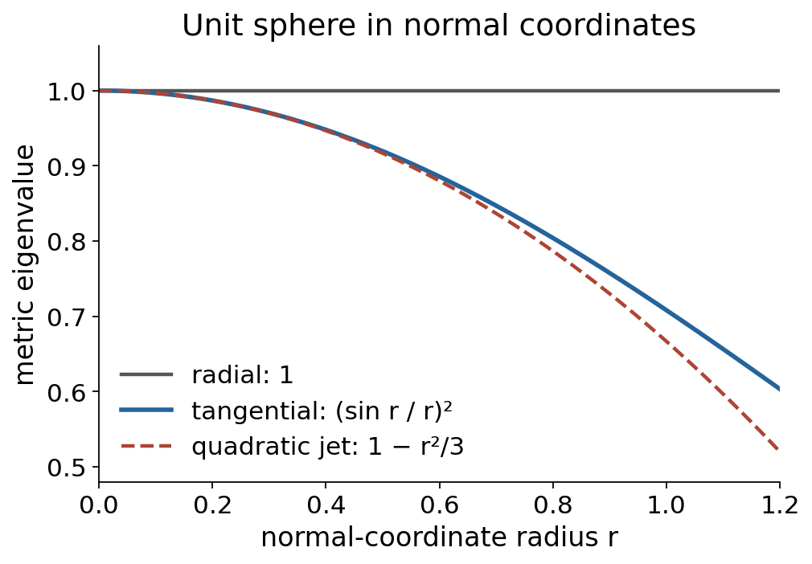

The formal calculus of variations and differential invariants
Written by GPT-6.1 Sol (OpenAI) in Codex at Ultra, October 2026. Self-checked by the writing AI, GPT-6.1 Sol (OpenAI), at Ultra. Public domain (CC0).
A boundary term changes an action without changing its equations. An invariant action can therefore be studied through its Euler expressions, whose transformation law is more rigid than that of a chosen density. For a metric, the same principle of discarding coordinate choices leads to normal coordinates: its derivatives at a point can be replaced by curvature and its covariant derivatives.
This lesson connects those three ideas. We use the first-variation identity, smooth metrics and their Levi-Civita connections, and the jet transformation rule in Prolongation, differential invariants and the projective group. Basic references are Noether's papers Invariants of arbitrary differential expressions, Formal calculus of variations and differential invariants, and Algebraic and differential invariants, together with Compère's Appendix A. Their subject matter is connected here by explicit homotopies and normal-coordinate calculations.
1. When the equations vanish before any variation
A null Lagrangian has $E_\alpha(L)=0$ identically on unrestricted jets. This is much stronger than saying that a particular graph solves its equations.
Theorem 1.1 (local null-Lagrangian theorem). Let $L$ be a smooth finite-order density on the full jet bundle of $X\times U$, where $U\subset\mathbb R^q$ is star-shaped about $c$. On each small base coordinate ball, $E(L)=0$ identically if and only if $L=D_iP^i$ for a smooth finite-order differential current $P$. More generally the conclusion holds on any jet domain on which the full homotopy to the jets of a reference section is defined.
Proof. Translate $u$ by $c$, so the centre is $0$. Differentiating along the ray of all jet coordinates gives
$$ L(x,u^{(k)})-L(x,0) =\int_0^1\sum_{\alpha,J}u^\alpha_J L_{u^\alpha_J}(x,\lambda u^{(k)})\,d\lambda. \tag{1.1} $$Apply first variation with field jets $w=\lambda u$ and test variation $h=u$. Its product-rule proof allows $h$ to be an independent test field; it does not require dividing by $\lambda$. Thus the integrand is
$$ u^\alpha E_\alpha(L)(x,\lambda u^{(2k)}) +D_iP_\lambda^i[u]. $$Here $P_\lambda$ is the explicit boundary formula of the preceding lesson, with coefficients evaluated at $\lambda u$ and test derivatives $D_Jh=u_J$. Total differentiation commutes with that evaluation. If $E(L)=0$, (1.1) is a divergence.
The remaining function $f(x)=L(x,0)$ also has a local primitive. With the base ball centred at $0$, define
$$ P_0^i(x)=x^i\int_0^1 t^{n-1}f(tx)\,dt. $$Its divergence is the integral of $d[t^n f(tx)]/dt$, equal to $f(x)$. Hence $P=P_0+\int_0^1P_\lambda\,d\lambda$ works. Every expression has finite jet order and is smooth, including at $\lambda=0$. The reverse implication is Proposition 2.1 of the preceding lesson. $\square$
Star-shaped values suffice on a full jet bundle, because all derivative coordinates are unrestricted. They do not suffice on an arbitrary jet subdomain that fails to contain the scaled derivative jets. The base conclusion is local; global topology has not been discarded.
For example, on two independent variables,
$$ u_{xx}u_{yy}-u_{xy}^2 =D_x(u_xu_{yy})-D_y(u_xu_{xy}). \tag{1.2} $$The third-derivative terms cancel by equality of mixed derivatives. This second-order null Lagrangian illustrates why a divergence can have lower order than its individual boundary derivatives suggest.
A closed one-form that has no single-valued primitive
On $U=\mathbb R^2\setminus\{0\}$, with fields $(u,v)$ and independent variable $x$, consider
$$ L=\frac{u v_x-v u_x}{u^2+v^2} =a(u,v)u_x+b(u,v)v_x, \quad a=-\frac{v}{u^2+v^2},\quad b=\frac{u}{u^2+v^2}. \tag{1.3} $$Its Euler expressions are $E_u=(b_u-a_v)v_x$ and $E_v=(a_v-b_u)u_x$, both zero since $b_u=a_v=(v^2-u^2)/(u^2+v^2)^2$. Locally $L=D_x\arg(u+iv)$.
It is not the derivative of any globally single-valued finite-order differential function. If $D_xF=L$ and $F$ has order $r\ge1$, the coefficients of the unrestricted highest derivatives $u^{(r+1)},v^{(r+1)}$ force $F_{u^{(r)}}=F_{v^{(r)}}=0$. Descend to $F=F(x,u,v)$. Comparison of the remaining coefficients gives $F_x=0$, $F_u=a$, $F_v=b$. But on the loop $(u,v)=(\cos\theta,\sin\theta)$, $\int(a\,du+b\,dv)=2\pi$, whereas a single-valued exact differential integrates to zero. The fibre is not contractible or star-shaped, and the obstruction persists even if the independent-variable interval is small.
2. The exact transformation law of the Euler expressions
Let an invertible point transformation be
$$ y^a=Y^a(x,u),\qquad v^\beta=V^\beta(x,u). $$It need not preserve the projection to the independent variables. Along a graph define
$$ A^a{}_i=D_iY^a,\qquad v^\beta_a=(A^{-1})^i{}_aD_iV^\beta. $$We restrict to the graph-transverse domain $\det A\ne0$. Use oriented densities and $\det A>0$ for the integral interpretation; for unsigned integration densities replace it by $|\det A|$. Suppose
$$ L(x,u^{(k)})=\det A\;\widetilde L(y,v^{(k)}). \tag{2.1} $$The right side includes the prolonged transformation. Set
$$ M^\beta{}_\alpha =V^\beta_{u^\alpha}-v^\beta_aY^a_{u^\alpha}. \tag{2.2} $$These are ordinary point partial derivatives of $V,Y$, followed by substitution of the transformed graph derivative. No additional derivative of the expression $V-v_aY$ is intended.
Theorem 2.1 (Euler covariance). On that domain,
$$ E_\alpha(L) =\det A\;M^\beta{}_\alpha \left(E_\beta(\widetilde L)\circ j^\infty(Y,V)\right). \tag{2.3} $$Proof. Vary the original graph vertically by $h$, holding $x$ fixed. A point of the varied graph moves by $\delta y=Y_u h$, $\delta v=V_u h$. At fixed new base coordinate $y$, its vertical variation is the characteristic $\widetilde h=\delta v-v_a\delta y^a=Mh$. First variation in the new chart consists of the Euler term $E_\beta(\widetilde L)\widetilde h^\beta$ plus a divergence and the base-volume boundary contribution. For compactly supported $h$, every boundary term vanishes. Changing variables by (2.1) gives
$$ \int E_\alpha(L)h^\alpha\,d^nx =\int \det A\,E_\beta(\widetilde L)M^\beta{}_\alpha h^\alpha\,d^nx. $$The fundamental lemma gives (2.3) along every graph; realization of finite jets gives the identity. The dependence of $M$ on first derivatives does not introduce derivatives of $h$: it is the fixed-$y$ characteristic, not the variation at moving coordinates. $\square$
The matrix $M$ is invertible. In the source tangent basis consisting of the graph-horizontal vectors $\partial_{x^i}+u_i^\alpha\partial_{u^\alpha}$ and the vertical vectors, the point Jacobian has block form $\left(\begin{smallmatrix}A&Y_u\\DV&V_u\end{smallmatrix}\right)$. Its determinant is $\det A\det(V_u-DV A^{-1}Y_u)=\det A\det M$. Both the full point map and $A$ are invertible, so $\det M\ne0$. Thus the Euler equations transform equivalently.
When an action is invariant under a point group, (2.3) is its relative differential-invariant law: the Euler expressions transform as the dual vertical characteristic, with the density Jacobian. They are not automatically scalar invariants. A boundary change of the density does not change them, by the null-Lagrangian result.
For a fibre change $v=f(u)$ and $y=x$, this reduces to $E_u(L)=f'(u)E_v(\widetilde L)$. For interchange $y=u$, $v=x$ on a one-dimensional graph with $u_x>0$, $A=u_x$, $M=-1/u_x$, so the weight $\det A\,M$ is $-1$. These examples check both the base factor and the characteristic factor.
3. Curvature from variation of a curve
For a plane graph $\gamma(x)=(x,u(x))$ oriented by increasing $x$, let $w=\sqrt{1+u_x^2}$, $ds=w\,dx$, $T=(1,u_x)/w$ and $N=(-u_x,1)/w$. Define signed curvature by $D_sT=\kappa N$, giving
$$ \kappa=\frac{u_{xx}}{w^3}. $$The Euler expression of arc length is
$$ E(w)=-D_x\left(\frac{u_x}{w}\right) =-\frac{u_{xx}}{w^3}=-\kappa. \tag{3.1} $$The action is Euclidean invariant; its Euler expression is the normal geometric curvature, with the relative law (2.3). Reflections or reversing the curve orientation change the signed convention; curvature squared and the curvature vector have the corresponding invariant interpretations.
For the bending functional,
$$ \int \kappa^2\,ds=\int \frac{u_{xx}^2}{(1+u_x^2)^{5/2}}\,dx, $$the exact graph Euler expression is
$$ E\left(\frac{u_{xx}^2}{w^5}\right)=2\kappa_{ss}+\kappa^3. \tag{3.2} $$There is no residual power of $w$ with these choices of dependent variation and signed normal. We prove that factor geometrically.
Parametrize the original curve by arclength and make a compactly supported normal variation $\delta\gamma=fN$. Then $D_s\delta\gamma=f_sN-\kappa fT$, so $\delta ds=-\kappa f\,ds$, $\delta D_s=\kappa fD_s$, $\delta T=f_sN$, and $\delta N=-f_sT$. Differentiating $\kappa=\langle D_sT,N\rangle$ gives $\delta\kappa=f_{ss}+\kappa^2f$. Hence
$$ \delta\int\kappa^2ds =\int(2\kappa f_{ss}+\kappa^3f)\,ds =\int(2\kappa_{ss}+\kappa^3)f\,ds. $$For a vertical graph variation $(0,h)$, its normal component is $f=h/w$, and $f\,ds=h\,dx$. The tangential component is a reparametrization and contributes only an endpoint term: for velocity $\tau T$, its variation of $\kappa^2ds$ is $D_s(\tau\kappa^2)ds$. This proves (3.2) by the fundamental lemma. The stationary unconstrained bending curves satisfy $2\kappa_{ss}+\kappa^3=0$; imposing length or area constraints changes that equation.
4. Replacing metric derivatives by curvature
For a positive-definite metric, choose $p$ and an orthonormal basis $(e_i)$ of $T_pM$. The normal-coordinate map is $x\mapsto\exp_p(x^ie_i)$ on a neighbourhood of $0$. The curvature convention is that of the preceding lesson:
$$ R(X,Y)Z=\nabla_X\nabla_YZ-\nabla_Y\nabla_XZ-\nabla_{[X,Y]}Z. $$In this section define components specifically by
$$ R_{ikjl}=\langle R(e_i,e_k)e_l,e_j\rangle. \tag{4.1} $$Thus the unit sphere has $R_{ikjl}=\delta_{ij}\delta_{kl}-\delta_{il}\delta_{kj}$. This fixes the sign in the expansion below.
The curvature symmetries needed in the proof can be established at this point. Write $A(a,b,c,d)=\langle R(a,b)c,d\rangle$. The definition makes it skew in $a,b$. Applying the covariant-derivative commutator to $\langle c,d\rangle$ gives $A(a,b,c,d)=-A(a,b,d,c)$, since $\nabla g=0$. For the cyclic identity, the radial geodesic equation in normal coordinates gives $\Gamma^k_{ij}(p)v^iv^j=0$ for every $v$; torsion-freeness then gives $\Gamma(p)=0$. At $p$ the curvature is the difference of two first derivatives of $\Gamma$. Their cyclic sum cancels because $\Gamma^k_{ij}=\Gamma^k_{ji}$, proving $A(a,b,c,d)+A(b,c,a,d)+A(c,a,b,d)=0$. These three identities give the pair exchange. Indeed the cyclic identity followed by skewness in the last pair gives $A(a,b,c,d)=A(b,c,d,a)+A(c,a,d,b)$. Applying the cyclic identity to these two terms gives $2A(c,d,a,b)-A(d,b,c,a)-A(a,d,c,b)$. The last two terms together equal $-A(a,b,c,d)$, by last-pair skewness and the cyclic identity for $(d,b,a)$ with fourth argument $c$. Hence $A(a,b,c,d)=A(c,d,a,b)$. In particular the Jacobi operator $z\mapsto R(z,x)x$ is self-adjoint.
Theorem 4.1 (normal-coordinate Taylor coefficients). In these coordinates,
$$ g_{ij}(x)=\delta_{ij}-\tfrac13R_{ikjl}(p)x^kx^l+O(|x|^3). \tag{4.2} $$For every $r\ge2$, its Taylor coefficient of degree $r$ is a universal polynomial in the components of $R,\nabla R,\ldots,\nabla^{r-2}R$ at $p$, using contractions with $\delta$. Conversely those curvature derivative components through order $r-2$ are polynomial functions of the normal-coordinate metric jet through order $r$. These are statements about finite jets of smooth metrics, not convergence of a Taylor series.
Proof. Fix a small vector $x\in T_pM$ and the radial geodesic $\gamma_x(t)=\exp_p(tx)$. Vary its initial velocity by $e_i$; the variation field is $J_i(t)$, with $J_i(0)=0$ and $\nabla_tJ_i(0)=e_i$. At $t=1$, it is the normal-coordinate vector $\partial_{x^i}$.
The geodesic variation has commuting coordinate fields $T=\partial_t$ and $J=\partial_\varepsilon$. Torsion-freeness gives $\nabla_TJ=\nabla_JT$. The curvature definition and $\nabla_TT=0$ imply $\nabla_T^2J=R(T,J)T=-R(J,T)T$. Thus $J$ satisfies the Jacobi equation $\nabla_t^2J+R(J,T)T=0$.
Parallel transport to $p$ is an isometry. Put $Y_i(t)=\operatorname{PT}_t^{-1}J_i(t)$ and
$$ \mathcal A_x(t)z=\operatorname{PT}_t^{-1} R_{\gamma_x(t)}(\operatorname{PT}_t z,\operatorname{PT}_t x) \operatorname{PT}_t x. $$The Jacobi initial-value problem is exactly the integral equation
$$ Y_i(t)=t e_i-\int_0^t(t-s)\mathcal A_x(s)Y_i(s)\,ds. \tag{4.3} $$The covariant Taylor formula along a geodesic with parallel frame gives, to any finite required degree,
$$ \mathcal A_x(s)z =\sum_{m=0}^{N}\frac{s^m}{m!}(\nabla_x^mR)_p(z,x)x +O(|x|^{N+3}). \tag{4.4} $$Here $N$ is any fixed nonnegative integer. The term indexed by $m$ has degree $m+2$ in $x$, and the remainder is uniform for $0\le s\le1$ on a sufficiently small normal-coordinate ball. Taylor's theorem justifies (4.4); no analyticity is needed. Write $Y_{i,r}$ for its homogeneous degree-$r$ coefficient in $x$. Then $Y_{i,0}=te_i$, $Y_{i,1}=0$, and for $r\ge2$,
$$ Y_{i,r}(t)=- \sum_{m+2+a=r}\int_0^t (t-s)\frac{s^m}{m!} (\nabla_x^mR)_p(Y_{i,a}(s),x)x\,ds. \tag{4.5} $$This finite recurrence proves inductively that $Y_{i,r}(1)$ is a universal polynomial of the asserted curvature order. Each integration is of a polynomial in $s$, so its coefficients are universal rational numbers.
The leading correction is $Y_i(1)=e_i-\tfrac16R_p(e_i,x)x+O(|x|^3)$. Consequently
$$ g_{ij}(x)=\langle Y_i(1),Y_j(1)\rangle =\delta_{ij}-\tfrac16\bigl(\langle R(e_i,x)x,e_j\rangle+ \langle e_i,R(e_j,x)x\rangle\bigr)+O(|x|^3). $$The curvature symmetries just proved make the two displayed contractions equal, yielding (4.2). In particular $g(0)=\delta$ and its first derivatives vanish.
For the converse, the coordinate formulas for $\Gamma$ and $R$ express them through $g^{-1}$ and derivatives of $g$ through order two. Each covariant derivative adds one differentiation and connection terms. At $0$, $g^{-1}=\delta$ and $\partial g=0$; derivatives of the inverse follow recursively by differentiating $g^{-1}g=1$. Therefore all curvature derivatives through order $r-2$ are polynomials in the metric derivatives through order $r$. This proves both directions. $\square$
The recurrence determines finite jets. It does not say that smooth metrics with all the same curvature derivatives at a point agree in a neighbourhood: a smooth perturbation flat to every order at that point is not detected by its Taylor jet.

Figure 4.1. On the unit two-sphere, the Jacobi equation gives radial metric eigenvalue $1$ and tangential eigenvalue $(\sin r/r)^2$ on $0\le r<\pi$, with value $1$ at $r=0$. Solution 7.5 derives both. The dashed curve is the quadratic Taylor polynomial $1-r^2/3$ from (4.2), an approximation near zero; the plot shows $0\le r\le1.2$. Positive curvature reduces tangential lengths relative to the Euclidean normal-coordinate radius. The eigenvalues multiply squared coordinate lengths. Original computed figure, CC0. Editable vector figure; the figure source reproduces it.
The reduction theorem
A scalar differential invariant of metric order $r$ is a function of a positive-definite metric and its coordinate derivatives through order $r$ at a point that is unchanged by all local coordinate diffeomorphisms.
Theorem 4.2 (Riemannian reduction). For $r\ge2$, every such invariant is a function on the orthogonal-group orbit space of the tuple
$$ (R,\nabla R,\ldots,\nabla^{r-2}R)_p. \tag{4.6} $$For $r=0,1$, all scalar differential invariants are constant on the full space of metric jets. Polynomial scalar invariants in a normal orthonormal frame are polynomials in complete contractions of the tensors in (4.6).
Proof. Normalize the metric jet by the exponential coordinates. Coordinate invariance does not change its value. Theorem 4.1 gives a universal map from (4.6) to that normalized jet, so the value depends only on (4.6). Changing the chosen orthonormal frame applies an element of $O(n)$ to every tensor in the tuple. All such frame changes are coordinate changes, so the resulting function is constant on orthogonal orbits. Conversely, the curvature tuple of a metric transforms tensorially under coordinate changes; any function of its orthogonal orbit is a scalar differential invariant on the realized tuple domain. For $r\le1$, the normal metric jet is always $(\delta,0)$, proving the constant assertion. The contraction statement follows from the orthogonal invariant theorem proved in §5. $\square$
For a general smooth invariant, “function on the orbit space” means equality of values on orbits. It does not assert a smooth extension to all of a Euclidean space of polynomial generators. Curvature tuples are subject to their curvature symmetries and differential identities; we do not treat them as independent arbitrary arrays.
For surfaces, the tensor at order two is $R_{ikjl}=K(\delta_{ij}\delta_{kl}-\delta_{il}\delta_{kj})$, so every scalar invariant through order two is a function of Gaussian curvature $K$. To verify this directly, the curvature pair symmetries make the tensor a symmetric bilinear form on $\Lambda^2T_pM$, which is one-dimensional; its unique component is the sectional curvature.
In dimension three, a curvature tensor is determined by Ricci:
$$ R_{ikjl} =\operatorname{Ric}_{ij}\delta_{kl}+\operatorname{Ric}_{kl}\delta_{ij} -\operatorname{Ric}_{il}\delta_{kj}-\operatorname{Ric}_{kj}\delta_{il} -\tfrac{\mathrm{Scal}}2(\delta_{ij}\delta_{kl}-\delta_{il}\delta_{kj}). \tag{4.7} $$The right side has the curvature symmetries and its Ricci contraction is the prescribed tensor. Its difference from $R$ has zero Ricci. In an orthonormal basis, the diagonal Ricci entries are the sums of the three sectional curvatures in pairs, forcing those components to vanish; off-diagonal Ricci determines the remaining three off-diagonal entries of the symmetric form on $\Lambda^2$. The difference is therefore zero. This proves (4.7). Orthogonal diagonalization of the symmetric Ricci matrix then shows that order-two scalar invariants are symmetric functions of its three eigenvalues. Polynomial ones are generated by the elementary symmetric functions, equivalently by $\mathrm{Scal}$, $\operatorname{tr}(\operatorname{Ric}^2)$ and $\operatorname{tr}(\operatorname{Ric}^3)$, via Newton's identities.
The polynomial assertion has a short algebraic proof. In lexicographic order a leading monomial of a symmetric polynomial in $\lambda_1,\lambda_2,\lambda_3$ has exponents $a_1\ge a_2\ge a_3$, because otherwise permuting two variables produces a larger monomial. The product $e_1^{a_1-a_2}e_2^{a_2-a_3}e_3^{a_3}$ has exactly that leading monomial. Subtract its appropriate multiple and repeat within the finite set of monomials of bounded degree. This proves generation by the elementary symmetric polynomials. Expanding the products gives $e_1=p_1$, $e_2=(p_1^2-p_2)/2$ and $e_3=(p_1^3-3p_1p_2+2p_3)/6$, where $p_j=\sum_i\lambda_i^j$.
5. Why contractions describe orthogonal invariants
Let $V=\mathbb R^n$ with its Euclidean inner product. A complete contraction pairs every tensor index with another using that inner product, leaving a scalar. For example $R_{ikjl}R_{ikjl}$ is the squared norm of curvature in an orthonormal frame, and $\nabla_aR_{ikjl}\nabla_aR_{ikjl}$ is the squared norm of its first derivative.
Theorem 5.1 (orthogonal invariant tensors). Every $O(n)$-invariant tensor in $V^{\otimes d}$ is a linear combination of pairings of its $d$ slots by the metric. For odd $d$ it is zero. Consequently invariant polynomials on any finite direct sum of tensor spaces, or on an invariant linear subspace of that sum, are polynomials in complete contractions.
Proof. We first compute moments of a uniform unit vector in a Euclidean space of dimension $a\ge1$. Let $Z$ be a vector of independent standard real Gaussians. Its moment-generating function is $\exp(\tfrac12|t|^2)$, obtained by completing the square in the Gaussian integral. Differentiating that function at $0$ shows that each even moment is the sum over all pairings of indices of the products of Kronecker deltas; odd moments are zero. Write $Z=\rho U$ in polar coordinates. The direction $U$ is uniform on the sphere, independent of $\rho$, since the Gaussian density depends only on radius. Integration by parts in the radial integral gives $\mathbb E\rho^{2k}=a(a+2)\cdots(a+2k-2)$. Thus
$$ \mathbb E(U_{i_1}\cdots U_{i_{2k}}) =\frac{\sum_{\text{pairings}}\prod \delta_{i_\ell i_{\ell'}}} {a(a+2)\cdots(a+2k-2)}. \tag{5.1} $$The same formula in a subspace uses its orthogonal projector $P_{ij}$ in place of $\delta_{ij}$. This includes dimension one, where the sphere consists of two points.
Construct a random orthonormal frame sequentially: its first vector is uniform on the unit sphere, its second uniform in the orthogonal complement, and so on. The last vector has the two equally likely signs. Orthogonal transformations preserve this construction, so its matrix $O$ has an invariant distribution. Averaging $O^{\otimes d}T$ therefore projects any tensor $T$ onto invariant tensors; if $T$ is invariant the average is $T$ itself.
For polynomials on a tensor representation, use $\mathcal R(p)(z)=\mathbb E[p(O^{-1}z)]$. Left invariance of the frame distribution gives $\mathcal R(p)(hz)=\mathcal R(p)(z)$ for $h\in O(n)$, by replacing $O$ with $hO$. This averaging fixes invariant polynomials and satisfies $\mathcal R(pI)=\mathcal R(p)I$ when $I$ is invariant.
Expand $T$ in coordinate basis tensors. Its average has components which are moments of entries of the columns of $O$. Integrate the last column first, conditional on the preceding columns. Formula (5.1) pairs its row indices by $P=I-\sum_{\ell<n}U_\ell\otimes U_\ell$. Expand these projector products into deltas and products of preceding-column entries. Repeat with the preceding columns. At every step the number of columns to integrate drops, and after the first column only pairings by $\delta$ remain. Thus the averaged tensor lies in the span of metric pairings. Odd tensor degree gives zero also directly from the action of $-I$.
Decompose a polynomial by degree in each tensor summand; the orthogonal action preserves this decomposition. Polarization identifies each such component with a multilinear form on its tensor variables. That form is a tensor in some $V^{\otimes d}$, after identifying dual slots with $V$ by the metric. Its invariance and the preceding result express it as a sum of complete contractions. Invariant polynomials on an invariant subspace extend to the ambient space by composing with the orthogonal projection onto the subspace, which commutes with $O(n)$. Summing the components finishes the proof. $\square$
For a fixed finite curvature tuple the polynomial invariant ring is finitely generated. Here is the finiteness argument. The polynomial ring in the tensor coordinates is Noetherian by the Hilbert basis theorem, proved in Noetherian and Artinian rings, Theorem 2.1. The ideal generated by all positive-degree homogeneous invariant polynomials therefore has a finite generating subset $I_1,\ldots,I_s$ consisting of such invariants. Average any expression $I=\sum a_jI_j$ over the orthogonal group. Averaging, defined by the invariant frame distribution above, preserves polynomial degree and satisfies $\mathcal R(a_jI_j)=\mathcal R(a_j)I_j$. For homogeneous $I$, the coefficients can be taken homogeneous of degree $\deg I-\deg I_j$, strictly smaller than $\deg I$. Induction on degree expresses every invariant polynomial in $I_1,\ldots,I_s$. The proof uses algebraic ideal finiteness and an averaging projection, rather than a bound on the number of components of a tensor.
Contractions also separate distinct orthogonal orbits of a finite tensor tuple. Indeed the orbits are compact and disjoint. A continuous function taking different constant values on them can be approximated uniformly by a polynomial on their union. For an explicit approximation, enclose them in a compact cube, extend the continuous distance-based separating function there, and use multivariable Bernstein polynomials, whose uniform convergence follows from uniform continuity and the variance bound for independent binomial variables. Averaging the approximating polynomial produces an invariant polynomial still separating the two orbits. Theorem 5.1 expresses it by contractions. Hence knowing all contractions determines the orbit. This does not identify a smooth invariant with a polynomial; it identifies the data on which its value depends.
To spell out that approximation, for disjoint compact orbits $A,B$ take $f(z)=d(z,A)/(d(z,A)+d(z,B))$, equal to $0$ on $A$ and $1$ on $B$. After rescaling a containing cube to $[0,1]^d$, its Bernstein polynomial is $\mathbb E f(X_1/N,\ldots,X_d/N)$ with independent $X_i\sim\operatorname{Bin}(N,z_i)$. This expectation is a polynomial by the binomial formula. Uniform continuity bounds the error by $\varepsilon$ on $|X/N-z|<\delta$; outside that event Chebyshev's inequality bounds its contribution by $2\|f\|_\infty d/(4N\delta^2)$, since $\sum_i\operatorname{Var}(X_i/N)\le d/(4N)$. The error tends to zero uniformly. Choose it smaller than $1/3$, then average; the two orbit values remain separated.
For curvature tuples subject to further, possibly nonlinear, identities, a polynomial invariant means the restriction of an ambient polynomial. Average that polynomial over $O(n)$. The restriction is unchanged because the realized set is invariant, and the averaged polynomial is an ambient invariant. Thus the contraction assertion also applies to polynomial invariants on realized curvature-jet sets.
6. Algebraic finiteness and differential generation
At each fixed metric order, the reduction theorem leaves a finite-dimensional tensor invariant problem for $O(n)$. Increasing the differential order introduces new covariant derivatives. Ordinary polynomial generation at one order does not imply that all orders require only finitely many polynomials.
An invariant derivative is a total-derivative combination that sends differential invariants to differential invariants. If $n$ invariant functions $I^a$ have invertible horizontal matrix $A^a{}_i=D_iI^a$, then
$$ \nabla_a=(A^{-1})^i{}_aD_i \tag{6.1} $$has that property: $d_HF=(\nabla_aF)d_HI^a$ is an invariant identity, so its uniquely determined coefficients are invariant. The invertibility condition cannot be removed. The arclength derivative $D_s$ is the geometric version for a curve.
The global Lie--Tresse theorem concerns an algebraic transitive Lie pseudogroup acting algebraically on a formally integrable irreducible differential equation, with algebraic fibres. There is a finite jet order and an invariant Zariski-closed exceptional locus such that, outside its inverse image, the algebra of invariants rational in low-order jets and polynomial in sufficiently high-order jets is generated by finitely many invariants and finitely many rational invariant derivations. Every element is a polynomial in iterated invariant derivatives of the generators, with coefficients rational in the basic invariants. The invariants separate regular orbits on the specified domain. The exceptional locus, rational-polynomial class, formal integrability, and algebraicity are part of the statement.
The exact internal provider is Prolongation, differential invariants and the projective group, in the programme's course on Lie transformation groups. Its current lesson gives the invariant-derivative construction and the theorem statement; the full finiteness proof is planned there. This is a planned proof dependency, not a claim that a proof is already available. Kruglikov and Lychagin, Global Lie--Tresse theorem, Theorems 1--2, are the research reference for that exact statement. None of the proofs in §§1--5 uses this finiteness theorem.
Noether's Algebraic and differential invariants connects these two kinds of finiteness questions. Here the reduction is explicit: finitely many metric derivatives at a point become a finite tuple of curvature tensors, while invariant differentiation connects successive orders. The algebraic averaging argument proves finiteness at a fixed tensor order. The Lie--Tresse theorem describes differential generation in its different, precisely restricted class.
7. Exercises
Exercise 7.1 (easy). Verify (1.2) and show directly that its Euler expression is zero.
Exercise 7.2 (medium). Compute the Euler expression of arc length and explain why it is signed curvature with the sign in (3.1). Verify the absence of a speed factor in (3.2).
Exercise 7.3 (medium). Give the homotopy primitive for a null Lagrangian depending on derivatives through order $k$ in one independent variable, including its term at $u=0$.
Exercise 7.4 (hard). Prove that (1.3) has zero Euler expressions but no globally single-valued finite-order primitive. Explain why a contractible independent-variable interval does not remove the obstruction.
Exercise 7.5 (hard). Derive (4.2) from a geodesic variation and the Jacobi equation, fixing the curvature sign by the unit sphere. Compute the radial and tangential eigenvalues of the normal-coordinate metric for the unit two-sphere.
8. Solutions
Solution 7.1. Differentiate the proposed current: $D_x(u_xu_{yy})=u_{xx}u_{yy}+u_xu_{xyy}$ and $D_y(u_xu_{xy})=u_{xy}^2+u_xu_{xyy}$. Subtraction proves (1.2). With symmetric jet coordinates counted once, $L_{u_{xx}}=u_{yy}$, $L_{u_{yy}}=u_{xx}$ and $L_{u_{xy}}=-2u_{xy}$. Thus $E(L)=D_x^2u_{yy}+D_y^2u_{xx}-2D_xD_yu_{xy}=0$.
Solution 7.2. Since $L_{u_x}=u_x/\sqrt{1+u_x^2}$ and $L_u=0$, its Euler expression is $-D_x(u_x/w)=-u_{xx}/w^3$. The left normal $N=(-u_x,1)/w$ gives positive $\kappa=u_{xx}/w^3$ for a graph concave upward. For the bending density, a vertical variation $h$ has normal variation $f=h/w$. Its normal first variation is $\int(2\kappa_{ss}+\kappa^3)f\,ds$ by the calculation in §3; $ds=w\,dx$ cancels the factor $1/w$. Therefore its graph Euler expression is exactly $2\kappa_{ss}+\kappa^3$.
Solution 7.3. With the star-shaped centre shifted to zero, set $a_{\alpha r}(\lambda)=L_{u^{\alpha(r)}}(x,\lambda u^{(k)})$. The one-dimensional boundary formula is
$$ P_\lambda= \sum_{\alpha}\sum_{r=1}^k\sum_{s=0}^{r-1} (-1)^sD_x^s a_{\alpha r}(\lambda)\, u^{\alpha(r-1-s)}. $$Indeed $a_{\alpha r}u^{\alpha(r)}=(-1)^ru^\alpha D_x^r a_{\alpha r}+D_x$ of the displayed inner sum. If the Euler expression is zero, integrating in $\lambda$ gives $L(x,u^{(k)})-L(x,0)=D_x\int_0^1P_\lambda\,d\lambda$. On an interval, add $\int_{x_0}^xL(s,0)\,ds$ to obtain a full primitive. No $1/\lambda$ factor is required.
Solution 7.4. Write the coefficients $a,b$ as in §1. Direct computation gives $b_u=a_v$, so $E_u=(b_u-a_v)v_x=0$ and $E_v=(a_v-b_u)u_x=0$. If a finite-order $F$ had $D_xF=L$, its highest-order jet coefficients would vanish, reducing its order successively to $F(x,u,v)$. Constant graphs imply $F_x=0$, and comparing $u_x,v_x$ gives $dF=a\,du+b\,dv$. On the circle $(u,v)=(\cos\theta,\sin\theta)$ that one-form is $d\theta$, of integral $2\pi$. This contradicts single-valuedness of $F$. The obstruction lies in the dependent-value fibre $U$, irrespective of the topology of the $x$ interval.
Solution 7.5. Vary $\gamma_x(t)=\exp_p(tx)$ in initial velocity $e_i$. Torsion-freeness and commuting variation parameters give the Jacobi equation $\nabla_t^2J_i+R(J_i,\dot\gamma)\dot\gamma=0$, with $J_i(0)=0$, $\nabla_tJ_i(0)=e_i$. Transporting to $p$ and substituting the leading curvature gives $Y_i(t)=te_i-\tfrac16t^3R(e_i,x)x+O(|x|^3)$, because $\int_0^t(t-s)s\,ds=t^3/6$. At $t=1$ the inner products yield $g_{ij}=\delta_{ij}-\tfrac13\langle R(e_i,x)x,e_j\rangle+O(|x|^3)$. For the unit sphere the radial Jacobi field remains $te_r$, whereas a tangential field satisfies $Y''+r^2Y=0$, $Y(0)=0$, $Y'(0)=e_\perp$, so $Y(1)=(\sin r/r)e_\perp$. The metric has radial eigenvalue $1$ and tangential eigenvalue $(\sin r/r)^2=1-r^2/3+O(r^4)$. This confirms both positive sphere curvature and the minus sign in (4.2), on the normal-coordinate ball before the cut locus.
Proof dependencies
The first-variation identity, its divergence corollary and the fundamental lemma are supplied with proofs by Variational symmetries and Noether's first theorem. The point-prolongation rule and the planned general Lie--Tresse finiteness proof have the exact internal provider described in §6. Hilbert's basis theorem has the internal commutative-algebra provider identified beside the finiteness argument. The curvature reduction, orthogonal contraction theorem, Euler covariance and both curve variation calculations are proved here.
References
- Emmy Noether, Invarianten beliebiger Differentialausdrücke, Nachrichten der Gesellschaft der Wissenschaften zu Göttingen (1918), 37--44; Formale Variationsrechnung und Differentialinvarianten, Encyklopädie der mathematischen Wissenschaften II, 3 (1922), 68--71, §28, contributed by Noether; Algebraische und Differentialinvarianten, Jahresbericht der Deutschen Mathematiker-Vereinigung 32 (1923), 177--184. English collected edition. These are Noether's works on reduction, variational construction and finiteness.
- Geoffrey Compère, Symmetries and conservation laws in Lagrangian gauge theories (2007), Appendix A, Theorem 20 and the horizontal homotopy discussion. Thesis.
- Boris Kruglikov and Valentin Lychagin, Global Lie--Tresse theorem, Selecta Mathematica 22 (2016), 1357--1411, Theorems 1--2. Research preprint. This credits the general finiteness statement; its internal proof dependency is recorded in §6.
- The first fundamental theorem for the orthogonal group is due to Hermann Weyl (1939); H. Kraft and C. Procesi, Classical Invariant Theory: A Primer, §10.2, proves it from Weyl's theorems on polarization. Theorem 5.1 gives an independent averaging proof of the contraction assertion.